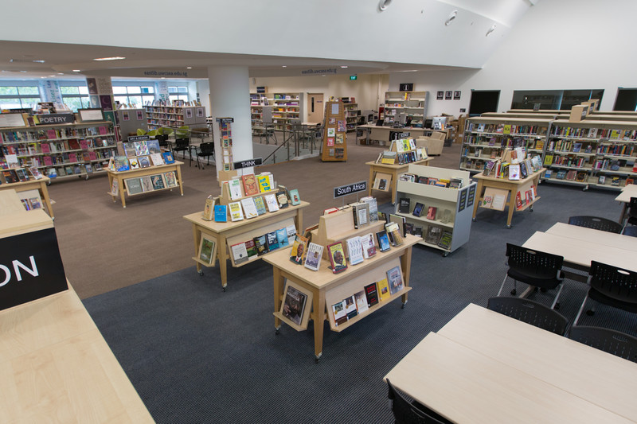
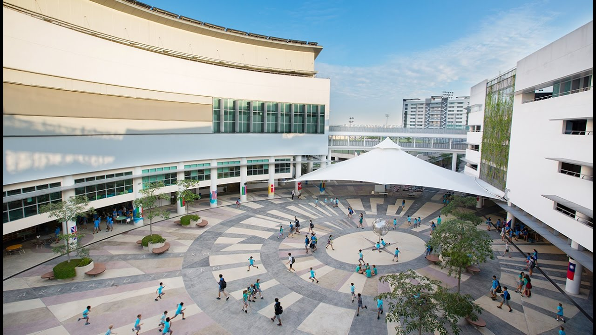
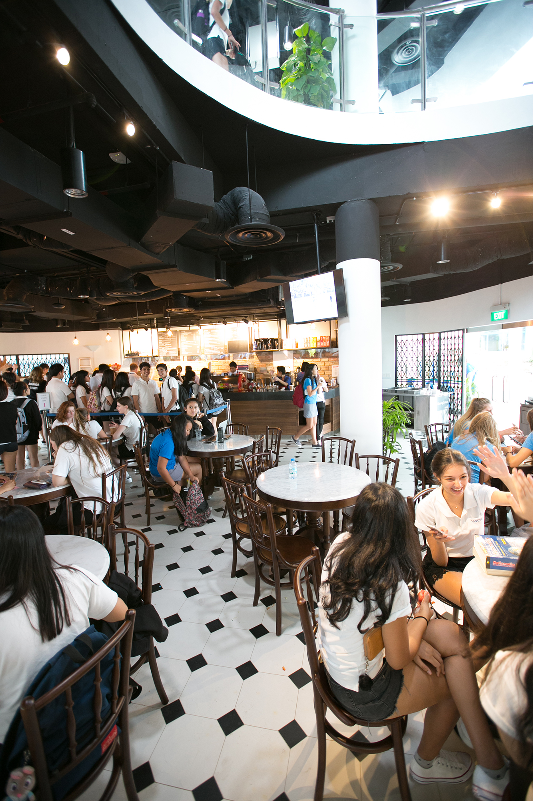

  
What's this?
The Library - I would say that it was both loved and hated. I hated it when I had to stay there to study for the IB exams or do research for my history papers. These moments were frustrating as the library felt more like a prison. Yet, this place also held dear memories and it was a refuge from a lot of things. Yes, it hosted the times of high stress and exam anxiety, but it was a place filled with laughter and de-stressing. I remember taking a nap with 5 of my friends on the bean bags in a corner till the library closed, I remember hiding under the tables with my best friends and watching Keeping Up With the Kardashians in one of the study rooms (we were obviously studying). This place was our hiding place from Singapore's scorching Sun and our nap time corner for the rainy days.
What's this?
This is called the Round Square, but we usually just call this place "The Globe" because of that metal globe structure in the middle. For lower school students, it is a place where they like to play tag, but for senior school students, we just like to treat this as a meeting spot. It is a really iconic area of the school really, but besides being a space for hosting events, there's really not much purpose to it.
What's this?
This is the school's cafe. I know it looks very fancy and cool, but really, it is actually quite nasty in real life because some students do not know the concept of cleanliness and being considerate. The glazed donuts and mocha are actually pretty good though.
Wanna see the uniform?
Go Back